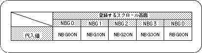

Return to previous page | Return to menu | Go to next page
The scroll screen that has finished storing scroll data and setting the scroll function must be registered with the SGL library function “slScrAutoDisp”.
Scroll registration refers to setting cycle patterns and drawing settings for each scroll screen for which function settings have been completed.
Also, scroll registration may fail depending on the scroll function settings to be registered, the number of scroll planes, and the VRAM bank in which the scroll data is stored.
This is due to several scrolling restrictions, including the scrolling restrictions by the number of colors in the normal scroll screen described above (the restrictions are described in the next section).

Note) The values in the above table are defined in “sl_def.h” included with the system.
When registering multiple scroll screens, it is convenient to combine the parameter substitution value of the library function “slScrAutoDisp” with the #define value corresponding to each scroll with the or operator “|” (example below) indicate).
Note) Parameter substitution values are defined in “sl_def.h”.